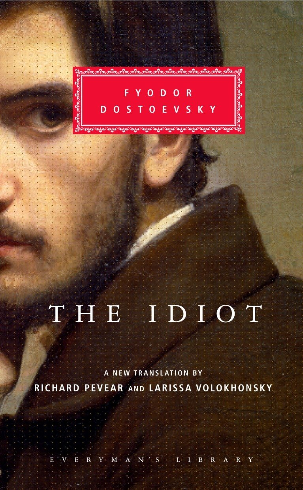

|  | 1868─1869 Idiotul Romanul reprezintă încercarea sa de a descrie un om perfect bun într-un mod care este încă convingător din punct de vedere psihologic, aparent o sarcină artistică imposibilă. Dacă ar putea reuși, credea Dostoievski, ar arăta că bunătatea asemănătoare lui Hristos este într-adevăr posibilă; și astfel însăși scrierea lucrării a devenit o încercare de ceea ce s-ar putea numi o dovadă a creștinismului sub forma unui roman. Eroul lucrării, Prințul Mișkin, este într-adevăr perfect generos și atât de inocent încât poate fi privit ca un idiot; cu toate acestea, el este înzestrat și cu o perspectivă psihologică profundă. Din păcate, bunătatea lui pare să aducă dezastru tuturor celor pe care îi întâlnește, chiar și eroinei romanului, Nastasya Filippovna, pe care dorește să o salveze. Cu o psihologie remarcabil de complexă, ea acceptă și sfidează cu amărăciune judecata lumii despre ea, ca femeie căzută. Ippolit, un tânăr răutăcios care moare de consum, oferă meditații strălucitoare despre artă, despre moarte, despre lipsa de sens a naturii mute și brutale și despre fericire, care, pentru el, reprezintă chiar viața. |
FILM